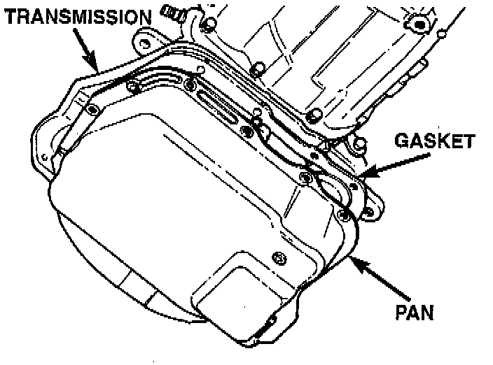
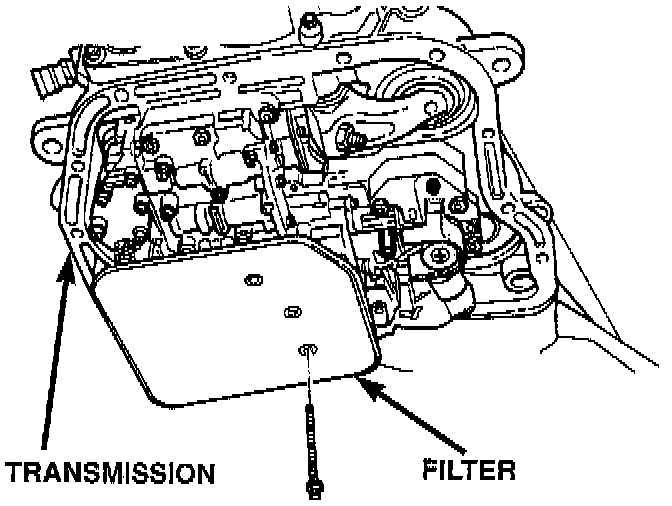
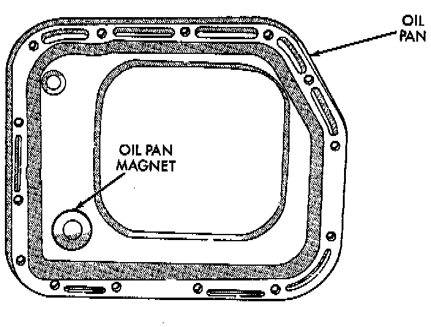

Fluid Filter - A/T: Service and Repair
NOTE: The service fluid fill after a filter change is approximately 3.8 liters (4.0 quarts).REMOVAL
1. Hoist and support vehicle on safety stands.
2. Place a large diameter shallow drain pan beneath the transmission pan.

3. Remove bolts holding front and sides of pan to transmission.
4. Loosen bolts holding rear of pan to transmission.
5. Slowly separate front of pan away from transmission allowing the fluid to drain into drain pan.
6. Hold up pan and remove remaining bolt holding pan to transmission.
7. While holding pan level, lower pan away from transmission.
8. Pour remaining fluid in pan into drain pan.

9. Remove screws holding filter to valve body.
10. Separate filter from valve body and pour fluid in filter into drain pan.
11. Dispose of used bans fluid and filter properly.
INSPECTION
Inspect bottom of pan and magnet for excessive amounts of metal or fiber contamination. A light coating of clutch or band material on the bottom of the pan does not indicate a problem unless accompanied by slipping condition or shift lag. If fluid and pan are contaminated with excessive amounts or debris.
Check the adjustment of the front and rear bands, adjust if necessary.

CLEANING
1. Using a suitable solvent, clean pan and magnet.
2. Using a suitable gasket scraper, clean gasket material from gasket surface of transmission case and the gasket flange around the pan.
INSTALLATION
1. Place replacement filter in position on valve body.
2. Install screws to hold filter to valve body. Tighten screws to 4 Nm (35 inch lbs.) torque.
3. Place new gasket in position on pan and install pan on transmission.
4. Place pan in position on transmission.
5. Install screws to hold pan to transmission. Tighten bolts to 17 Nm (150 inch lbs.) torque.
6. Lower vehicle and fill transmission with MOPAR ATF+4, type 9602 fluid, or equivalent.